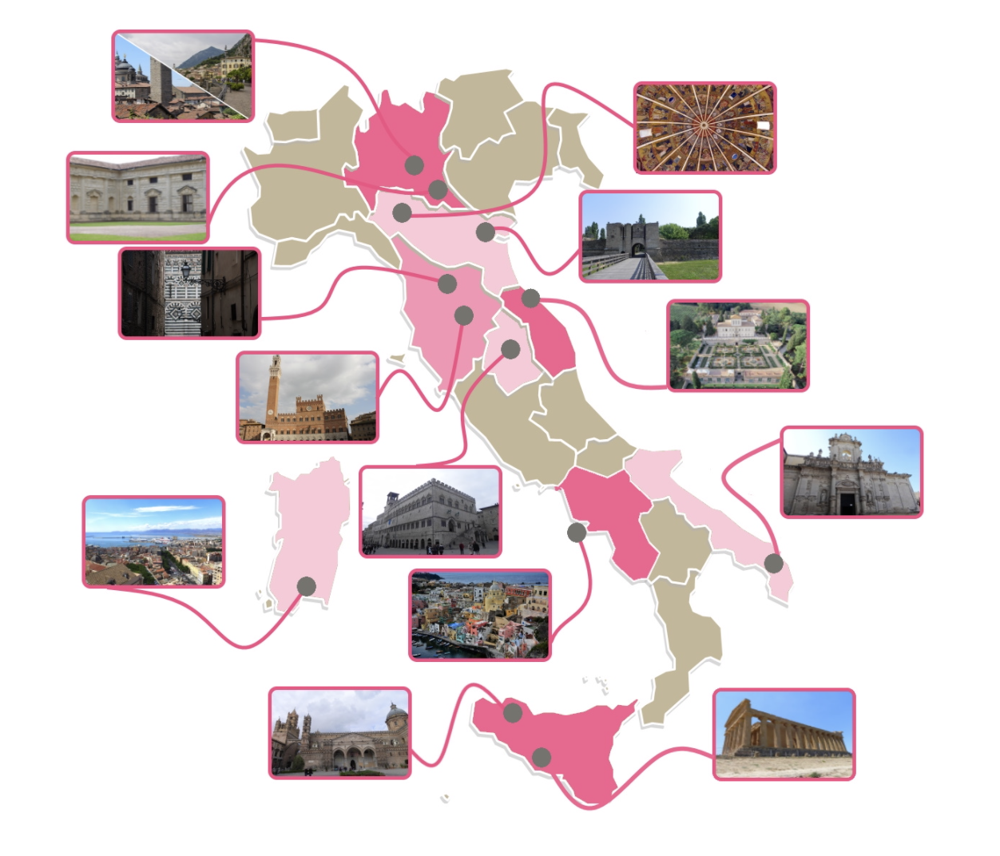

Explore the charm of Italy's Culture Capital and its meaning. Dive into a year-long celebration of art, heritage, and creativity.
Esplora il fascino della Capitale della Cultura italiana e il suo significato. Immergiti in una celebrazione annuale di arte, patrimonio e creatività
Questa idea è nata nel 2014 con l'obiettivo di valorizzare il ricco patrimonio culturale italiano, sia materiale che immateriale. È stata promossa dopo che molte città italiane hanno partecipato alla selezione per diventare la Capitale europea della cultura nel 2019.
Il cuore di questa iniziativa è promuovere progetti e attività che mettano in luce la nostra cultura unica. Questo confronto e la competizione tra le varie realtà territoriali sono un incentivo importante per il turismo e gli investimenti nel settore.
Come funziona la selezione? Una giuria composta da sette esperti indipendenti valuta le candidature delle città finaliste. Dopo "audizioni" approfondite, raccomandano al Ministro della cultura quale luogo ritengono più idoneo. Il titolo viene poi conferito dal Consiglio dei Ministri su proposta del Ministro della cultura.

La città vincitrice non solo riceve il prestigioso titolo di Capitale italiana della cultura per un anno, ma anche un finanziamento di un milione di euro. Questo sostegno permette alla città di mostrare al mondo i suoi aspetti originali e i fattori che guidano lo sviluppo culturale, che a sua volta alimenta la crescita di tutta la comunità.
Le Capitali europee della cultura (ECOC) e la Capitale italiana della cultura sono entrambe iniziative mirate allo sviluppo delle città attraverso la valorizzazione del patrimonio culturale e la promozione della cultura.
Le Capitali europee della cultura sono gestite dalla Commissione europea e sono state lanciate nel 1985 dall’allora Consiglio dei ministri europei (ora dell’Unione europea). Da allora fino al 2021, il titolo è stato assegnato a più di 65 città in tutta Europa. Le città italiane che hanno ricevuto questo riconoscimento includono Firenze (1986), Bologna (2000), Genova (2004), Matera (2019), e Gorizia con Nova Gorica (2025).

Questa iniziativa non è solo un riconoscimento, ma un'opportunità straordinaria per celebrare e far crescere la nostra cultura italiana. Speriamo che questo riassunto vi abbia incuriosito e magari vi ispiri a esplorare di più la ricchezza della nostra patria.
fonte: La capitale della cultura: Che cos'è
Parole Chiave
| Iniziative | Attività o progetti che vengono avviati o proposti. |
| Sviluppo | Processo di crescita o miglioramento. |
| Valorizzazione | Atto di apprezzare o aumentare il valore di qualcosa. |
| Patrimonio culturale | L'eredità di tradizioni, opere d'arte e conoscenze di una società. |
| Promozione | Azione di pubblicizzare o diffondere qualcosa. |
| Gestite | Dirette o controllate da qualcuno. |
| Commissione europea | Organismo dell'Unione europea che gestisce determinati settori. |
| Lanciate | Avviate o introdotte inizialmente. |
| Consiglio dei ministri | Gruppo di ministri che prendono decisioni politiche. |
| Titolo | Designazione o riconoscimento formale. |
| Assegnato | Conferito o dato a qualcuno. |
| Città | Grande area urbana abitata. |
| Riconoscimento | Atto di riconoscere o ammettere ufficialmente. |
| Insignite | Onorate o premiate con un riconoscimento. |
| Proposta | Idea o suggerimento avanzato per considerazione. |
| Coordinare | Organizzare o armonizzare varie attività. |
| Segretariato generale | Unità di un'organizzazione responsabile dell'amministrazione generale. |
| Ministero della cultura | Dipartimento governativo che si occupa di questioni culturali. |
Esercizio
Domande
- Perché sono state create le iniziative della Capitale italiana della cultura e delle Capitali europee della cultura?
- Qual è il ruolo della Commissione europea nelle Capitali europee della cultura?
- Come viene scelta ogni anno la Capitale della cultura?
- Puoi citare alcune città italiane che hanno ricevuto questo titolo?
- Chi gestisce le procedure di selezione per entrambe queste iniziative culturali?